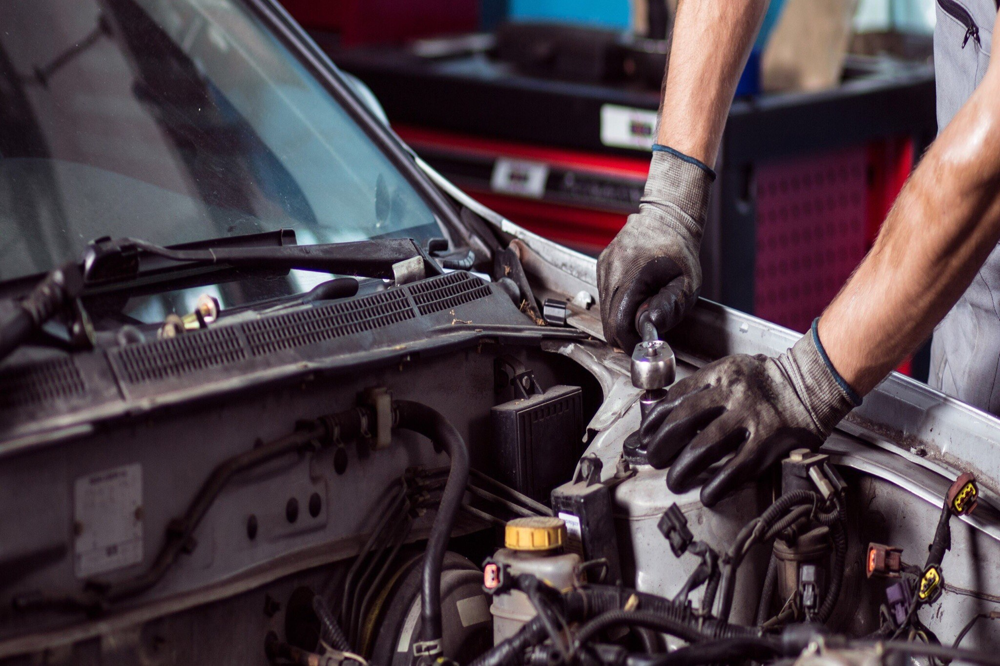
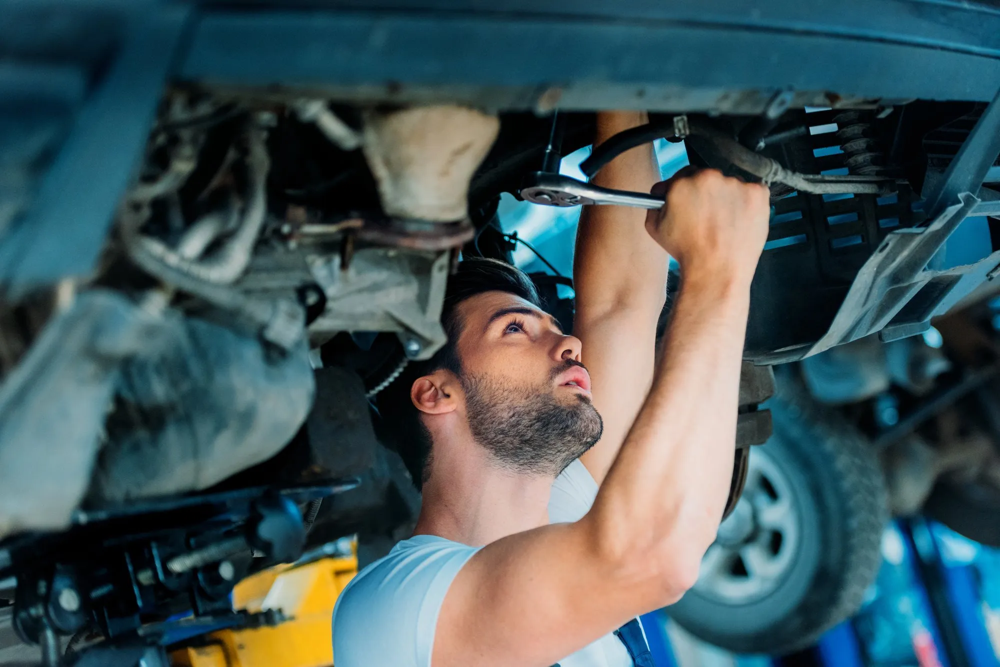
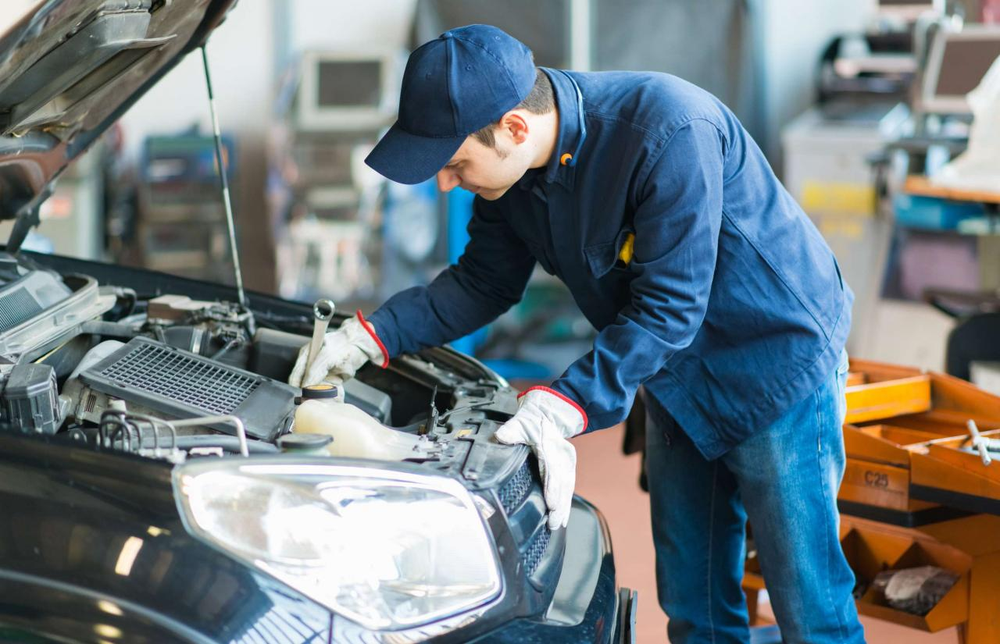
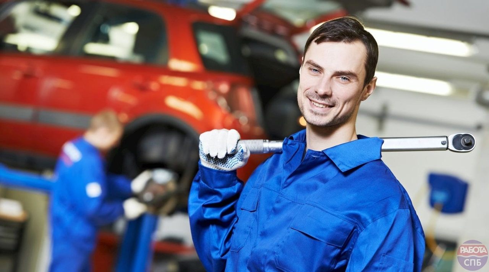

Диагностика, ремонт и техническое обслуживание автомобиля
Запасные Части, Ремонт И Техническое Обслуживание Автомобилей
Наша автомастерская специфицируется на работе с иномарками и будет рада помочь вам с ремонтом!
Полное тех. обсулаживание вашего автомобиля
Ремонт/замена старого оборудования
Шиномонтаж
Автомойка
Продажа запчастей

Наши работники



Наши плюсы
Наш подход к ремонту автомобиля прост - каждую машину мы делаем " как для себя". Некоторые из вас уже положительно оценили нашу работу - поэтому качество и оперативность при низкой цене наш главный принцип.
Особое внимание наша автомастерская уделяется повышению качества услуг. В условиях жесткой конкуренции на рынке автосервиса этот важнейший фактор позволяет нам сохранить и расширить круг наших клиентов, гарантируя им стабильно высокое качество услуг при минимально низкой цене. Каждый этап работ тщательно контролируется нашими специалистами! Всё это позволяет нам производить ремонт и техническое обслуживание автомобилей в максимально короткие сроки и по доступным потребителям, ценам.